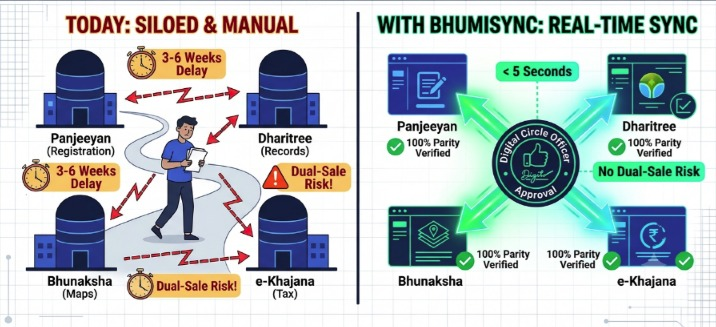
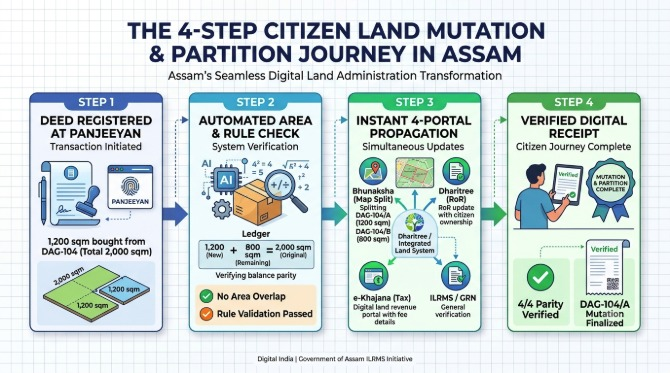
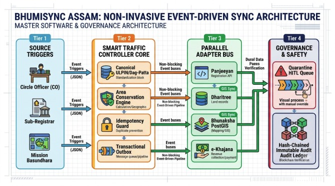
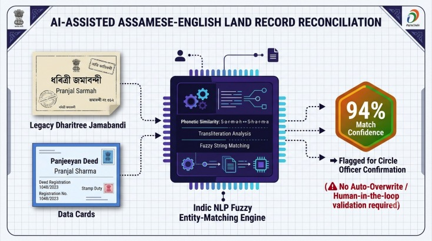
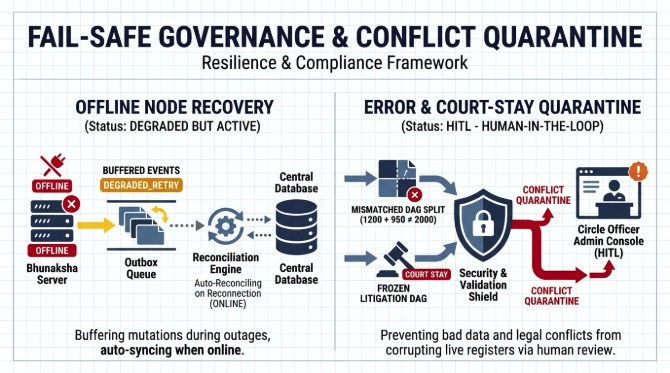
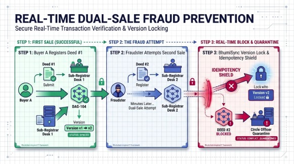
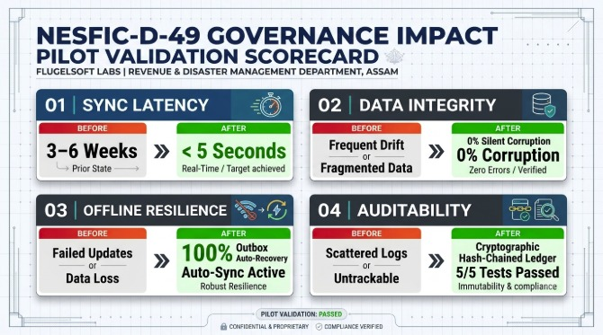
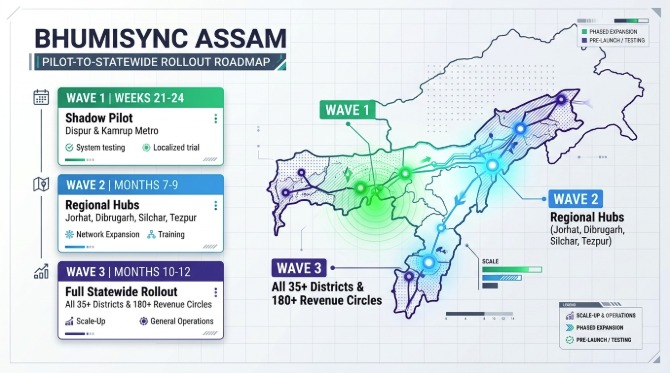

Fig 3: Live deployed BhumiSync Assam MVP Control Plane (
bhumisync-assam.pages.dev).Proposal Document: Automatic Synchronisation Across Land Record Systems in Assam
Lead Applicant: Kalyanjit Hatibaruah | Organization: Flugelsoft Labs | Live Prototype: https://bhumisync-assam.pages.dev/
Land administration in Assam relies on multiple specialized digital platforms—Dharitree (ILRMS) for textual Records of Rights (Jamabandi and Chitha), Bhunaksha for cadastral spatial maps, Panjeeyan (e-Registration) for Sub-Registrar property deeds, e-Khajana for land revenue demand/collection, and Mission Basundhara for citizen service workflows. Currently, these systems operate with asynchronous, manual, or batch-coupled handoffs. When a citizen registers a sale deed at a Sub-Registrar Office or receives Circle Officer (CO) approval for a mutation, partition, or reclassification, the update does not automatically propagate in real time across all connected databases.
Users & Beneficiaries: Citizens & Pattadars (avoiding delayed mutations and dual-sale fraud), Revenue & Registration Officials (eliminating manual re-entry across portals), and State Governance & Banks (trustworthy title data). Intended Outcome: Once an authorized modification is approved, it validates invariants and propagates across all connected registries within seconds.

BhumiSync Assam is a non-invasive, event-driven transactional synchronization middleware and control plane sitting above Assam’s existing land record systems without requiring core database rewrites:
Σ child Dag areas == parent Dag area), Court-Stay freeze locks, and monotonic version ordering.prevHash → entryHash chaining.An approved deed in Panjeeyan or mutation/partition in Dharitree is captured by BhumiSync’s Outbox, validated for spatial-textual invariants, and propagated simultaneously to all 4 portals. We built and deployed the interactive BhumiSync Assam Control Plane MVP at https://bhumisync-assam.pages.dev/ with live SVG cadastral splitting, offline node recovery, and a Circle Officer Admin Console.

bhumisync-assam.pages.dev).Built on a decoupled, cloud-native Event-Driven Microservices & CDC stack: React 18 + TypeScript + Vite Control Plane UI; Node.js/Go Sync Core; NATS JetStream / Apache Kafka with persistent DLQ; PostgreSQL/PostGIS for canonical snapshots and polygon topology validation; and an AI/ML Assamese-English transliteration entity-matching assistant (Phase 2) for legacy name reconciliation. Deployable via Docker/Kubernetes on MeghRaj (GI Cloud) or Assam State Data Centre (SDC).


We follow an Agile, Test-Driven methodology: (1) Discovery & Schema Mapping, (2) Architecture & Wireframes, (3) Interactive MVP Prototype (completed), (4) Sandbox Integration & AI Entity-Matching, and (5) Security Hardening & Circle Shadow Pilot. Ready for Validation at Week 20.
Development and staging require anonymized Jamabandi/Chitha extracts, Bhunaksha GeoJSON/Shapefiles (WGS84 / UTM 46N), sample Panjeeyan deed payloads, and e-Khajana demand structures, with all PII masked. Assam area constants (1 Bigha = 5 Katha = 100 Lessa = 1,337.8 m²) are standardized across adapters. No unconfirmed live production access is assumed; current MVP runs on synthetic Assam fixtures pending Phase 1 sandbox APIs.
| Role | Core Domain & Technical Expertise | Active Phases |
|---|---|---|
| Tech Lead / Distributed Architect (1 FTE) | Event-driven architecture, Kafka/NATS, Outbox & consistency | Phases 1–5 |
| Backend & Integration Engineers (2 FTEs) | TypeScript/Go, PostgreSQL, REST/SOAP/CDC legacy adapters | Phases 2–5 |
| GIS & Spatial Specialist (1 FTE) | PostGIS, GeoJSON topology validation, Bhunaksha Dag splits | Phases 1–4 |
| AI/ML & NLP Engineer (1 FTE) | Assamese/English entity resolution & transliteration matching | Phases 3–4 |
| Frontend & UX Engineer (1 FTE) | React, TypeScript, Circle Officer HITL & map dashboards | Phases 2–5 |
| QA, Security & Domain SME (1 FTE) | Automated testing, VAPT, Assam Revenue & Basundhara workflows | Phases 1–5 |
Our automated vitest suite passes 5/5 core guarantee tests (atomic 4-portal propagation, Area Conservation quarantine, idempotent replay protection, offline Outbox recovery, and Court-Stay Dag freeze locks). Security enforces mTLS, RBAC (Circle Officer / NIC Admin / Auditor), DPDP Act 2023 data minimization, TLS 1.3 + AES-256 encryption, and tamper-evident hash-chained audit logs.


Indicative 6-month MVP-to-Pilot budget is ~₹18–24 Lakh (manpower + MeghRaj/SDC staging VMs). Key risks—legacy API drift, rural connectivity drops, and historical data mismatches—are mitigated via the Adapter pattern, Transactional Outbox, and Quarantine HITL review. Post-development, a 4-week Shadow-Mode & Controlled Live Pilot in 1–2 Revenue Circles (e.g., Dispur) will benchmark turnaround reduction and 100% parity compliance.


Disclaimer: This proposal and MVP prototype for NESFIC 2026 (NESFIC-D-49) use synthetic Assam land record fixtures and are not connected to live Government of Assam production databases. © 2026 Flugelsoft Labs. Lead Applicant: Kalyanjit Hatibaruah. Live Prototype: https://bhumisync-assam.pages.dev/